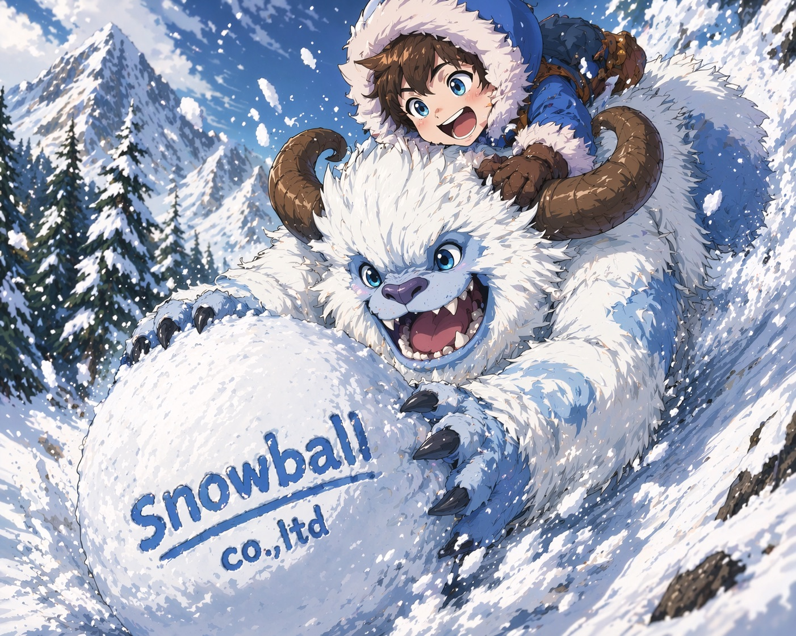
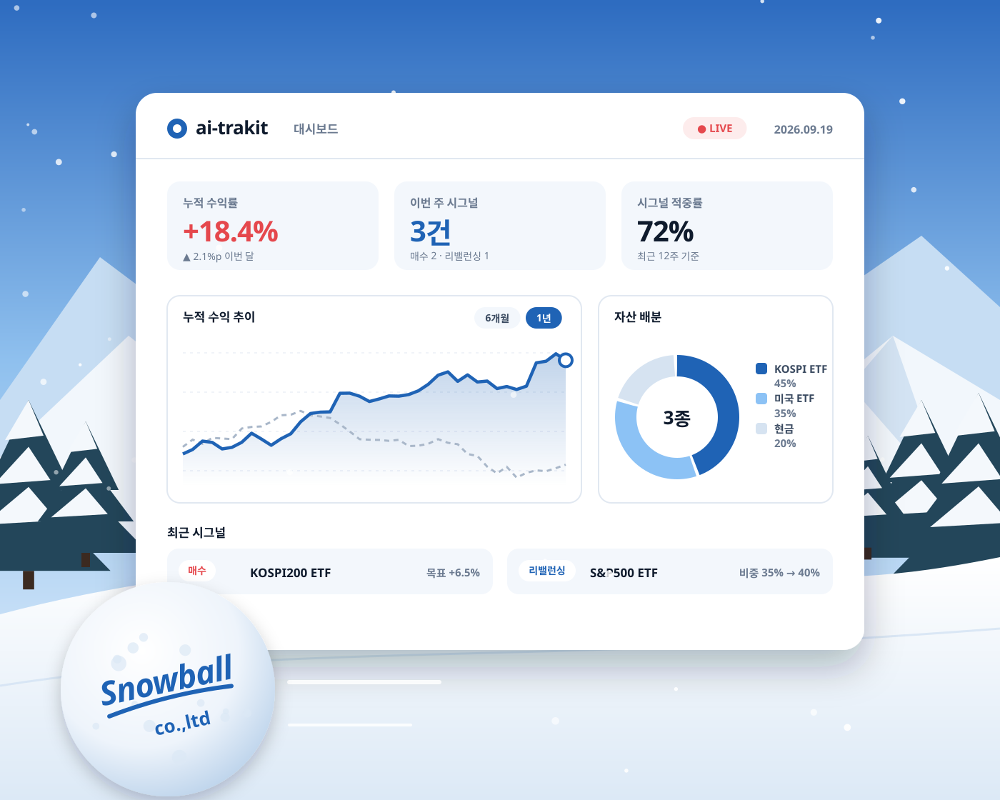
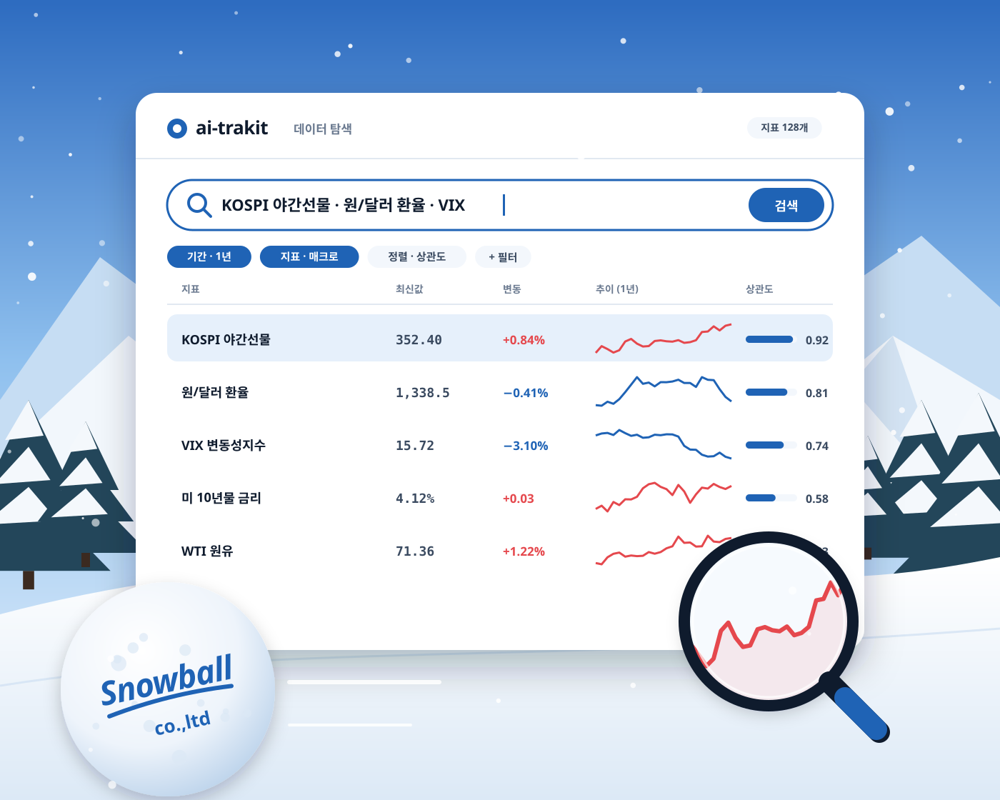
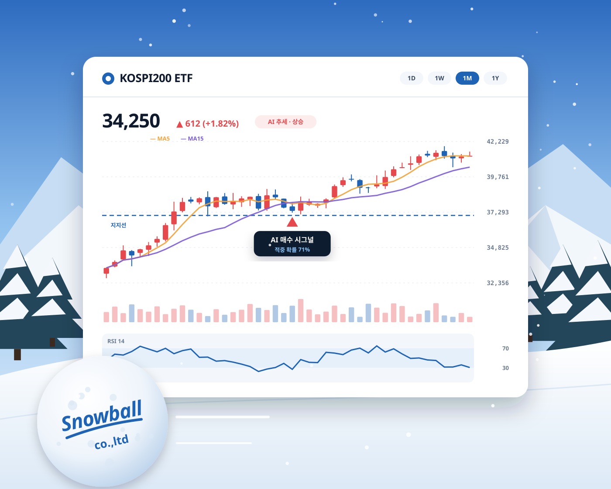
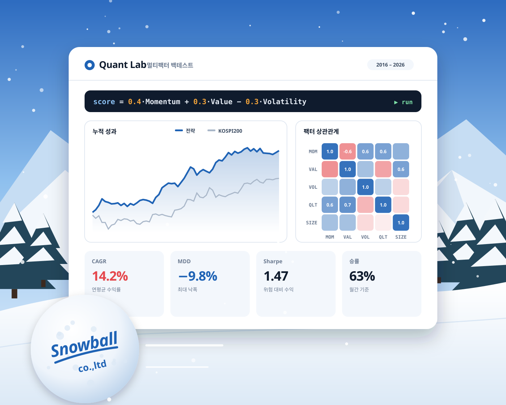
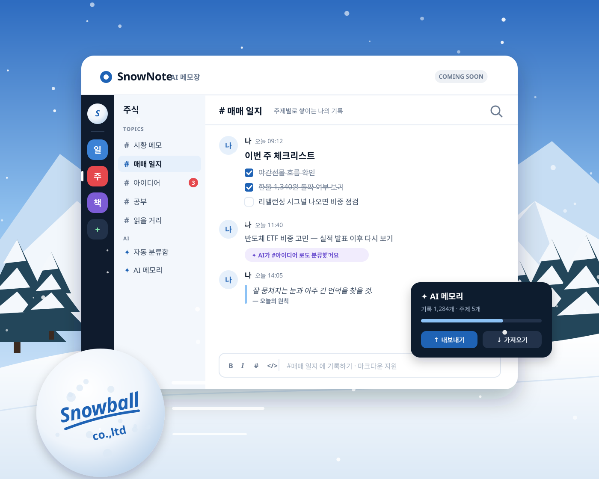

SNOWBALL · 스노우볼
먼저 한 걸음,
끝은 창대하리.
“Life is like a snowball. The important thing is finding wet snow and a really long hill.” — Warren Buffett
작은 한 걸음도 쌓이면 눈덩이가 됩니다.
스노우볼은 AI로 데이터와 기록을 꾸준히 쌓아, 오래 굴러갈수록 커지는 가치를 만듭니다.






이미지 속 화면과 수치는 이해를 돕기 위한 예시이며, 실제 서비스 성과가 아닙니다. 과거 성과가 미래 수익을 보장하지 않습니다.
About
왜 스노우볼인가
인생은 눈덩이와 같다. 중요한 것은 잘 뭉쳐지는 눈과 아주 긴 언덕을 찾는 것이다.
잘 뭉쳐지는 눈은 데이터에서, 긴 언덕은 규율에서 찾습니다. 우리는 한 번의 큰 도약보다, 매일 같은 기준으로 한 걸음씩 쌓아 가는 쪽을 믿습니다.
한 걸음
Start
거창한 시작보다 오늘의 한 걸음. 작게 시작해 검증하고, 검증된 것만 굴립니다.
긴 언덕
Discipline
감정이 아닌 규칙으로. 데이터와 AI가 같은 기준을 매일 반복합니다.
창대함
Compound
쌓인 것은 사라지지 않습니다. 시간이 지날수록 커지는 누적의 힘을 믿습니다.
Products
쌓일수록 커지는 제품
지금 쓸 수 있는 것 먼저, 준비 중인 것은 정직하게 뒤로.
P001
ai-trakit
AI 기반 ETF 투자 정보
KOSPI 야간선물·환율·VIX 등 시장 데이터를 AI 모델로 분석해,
ETF 중심의 리밸런싱·매매 시그널을 모든 회원에게 동일하게 제공하는 구독형 투자 정보 서비스입니다.
- AI 시그널
- ETF 중심
- 지난 시그널 성과 공개
- Free · Pro 월 9,900원
유사투자자문 서비스 · 투자 판단과 책임은 이용자 본인에게 있습니다.
P002
SnowNote
AI 메모장 · 스노우노트
나의 기록을 내 것으로. 채팅하듯 가볍게, 주제별 채널에 쌓아가는 AI 메모장.
마크다운 편집, 주제별 자동 분류, AI 메모리 내보내기·가져오기.
Contact
함께 굴려 갈 분을 찾습니다
제품 문의, 제휴 제안 등 모든 연락을 환영합니다. 개별 투자 상담에는 응할 수 없는 점 양해 바랍니다.